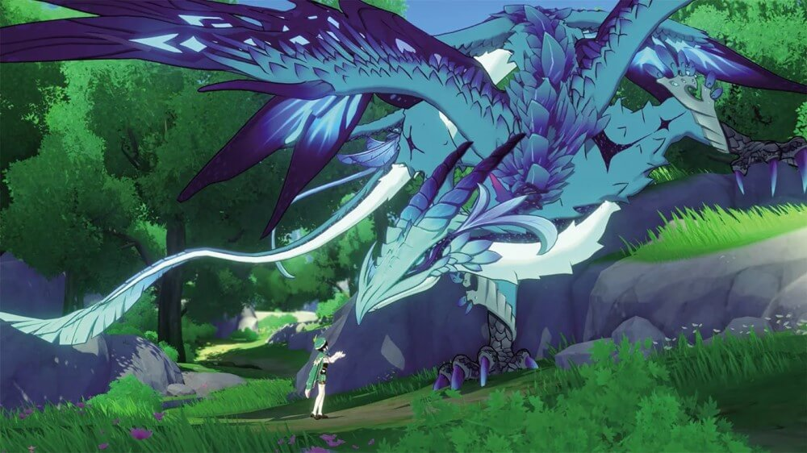
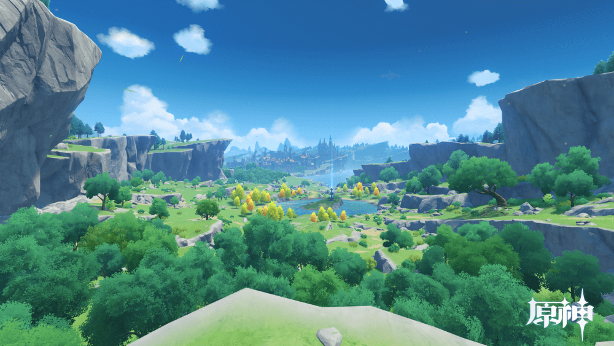
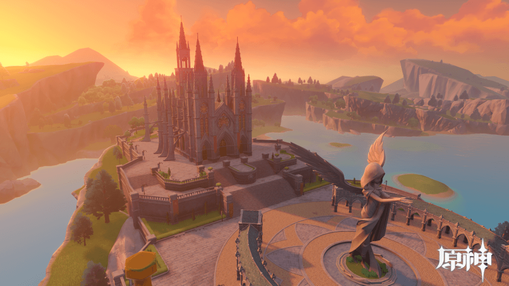
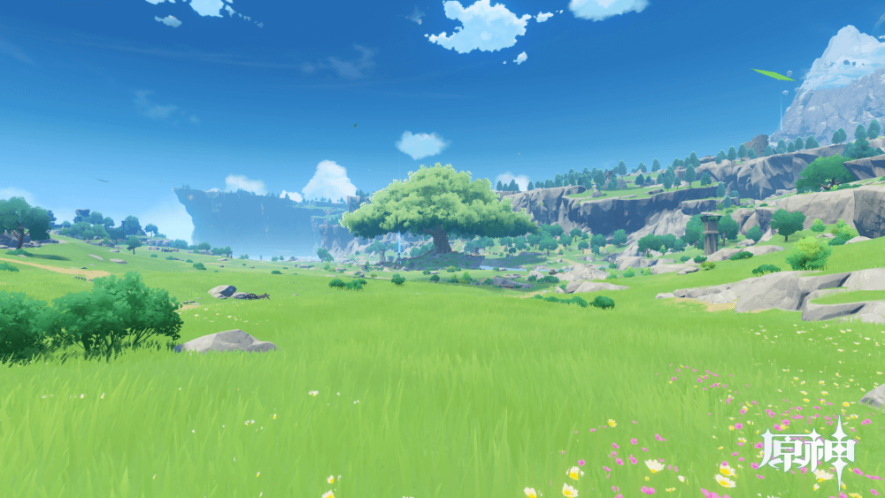
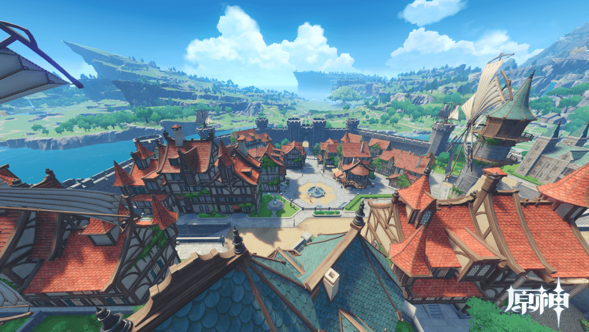
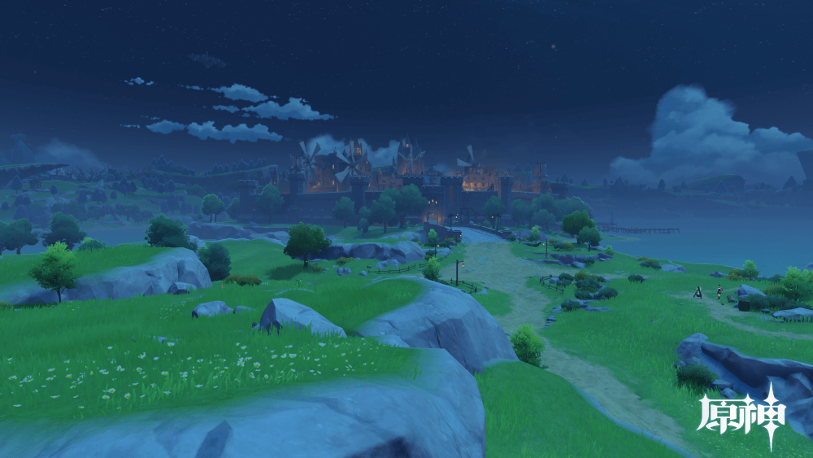
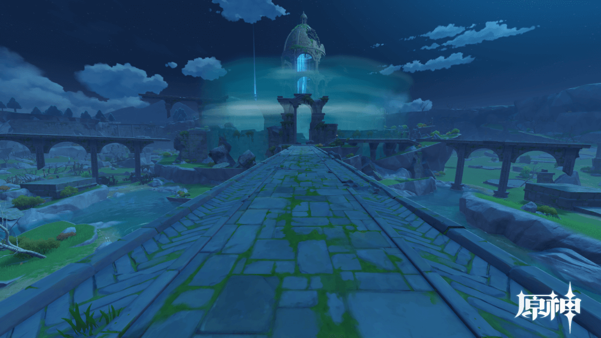
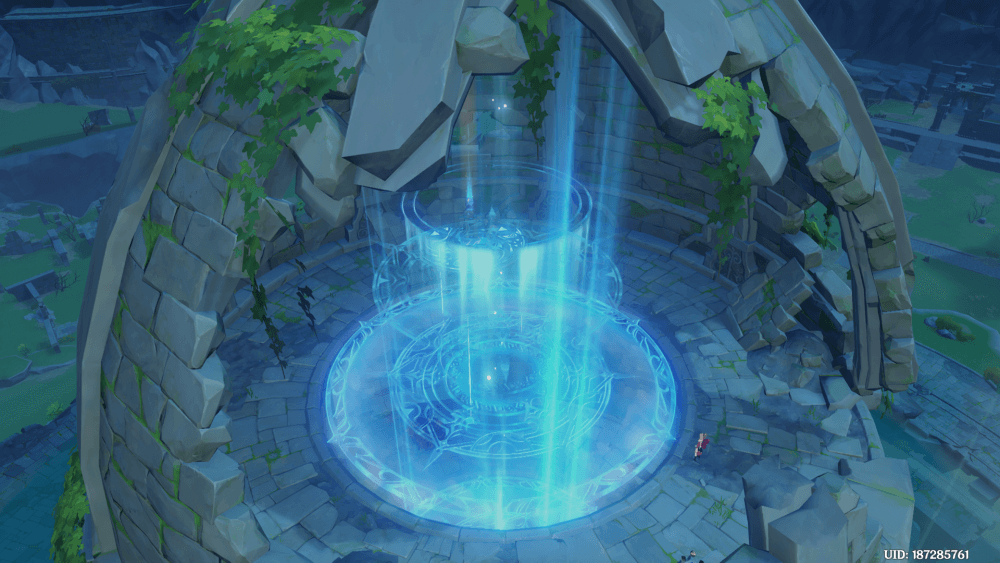
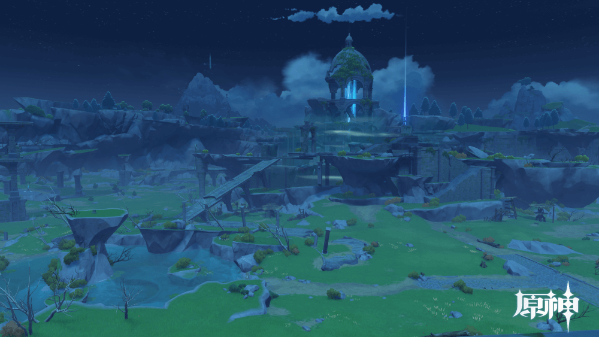

原神中每个主线剧情的每一幕任务，在游戏中的体验时间都在半小时至一个小时左右徘徊，其中的文本量之巨大，把剧情全搬下来是不现实的，于是我只对于第一个国家蒙德，根据它每一幕的任务中的每个小节，做了简短的概括。
蒙德
序章 第一幕 捕风的异乡人
- 神带走了你唯一的血亲，而你也被神封印，陷入沉眠。醒来后你先是独自流浪，后来又与奇妙的伙伴「派蒙」相遇，开启了提瓦特大陆的探索之旅…
- 从坠星山谷启程，你和派蒙走走看看，一路前行。在你们前进的道路上，出现了一座奇特的「七天神像」。在派蒙的建议下，你上前查看。
- 令人意外的是，七天神像中的风元素之力竟与你产生了呼应。你们决定，先从提瓦特七神中的风神开始调查，于是，你们的第一步，便是前往风神护佑之地：蒙德城。
- 在前往蒙德城的路上，你们意外打搅了巨龙与神秘人的相会。在带着疑惑继续前行的你面前，一位轻盈的少女突然出现，挡住了你的去路。
- 少女名为安柏，身为侦察骑士的她提出护送你们前往蒙德。但是在那之前，她得先解决城外四处游荡的丘丘人，这是她此次出城的任务。
- 有了你们的帮助，麻烦很快解决。在安柏的带领下，你们来到了自由城邦——蒙德。
- 本该宁静祥和的蒙德城中，巨龙突然来袭。它正是安柏提到的风魔龙，亦是你们先前在林中遇见的巨兽。你们艰难击退了来袭的风魔龙。来自西风骑士团的凯亚目睹了这一过程，此后，你们受邀前往骑士团总部一叙。
- 北风之狼的庙宇由骑士凯亚与你们一道探索。丽莎负责与你们共同扫查南风之狮的庙宇。



序章 第二幕 为了没有眼泪的明天
- 在你们的努力下，蒙德的元素流动终于回归了正常，是时候回到蒙德，向琴回报你们的进展了。
- 你们回到蒙德城，偶然遇到了琴与「愚人众」的冲突。此后你向琴展示了在森林中发现的风龙泪滴，在琴的请求下，你又一次参与到了对风魔龙特瓦林的调查之中。
- 正准备出发调查的你们，在骑士团总部的门外，见到了跟风魔龙对话的神秘家伙。这位神秘人自称吟游诗人温迪,你还没等到温迪解释清与巨龙的联系，他便自顾自离开了。追着他的脚步，你们来到了风起地的巨树下。
- 终于停下脚步的温迪向你解释，他在低语森林中与特瓦林相见时，本想为它清除诅咒,却没能成功。现在，如果想要让特瓦林恢复本心，不得不依赖「天空之琴」的力量。
- 温迪准备用花言巧语将天空之琴骗到手的计划毫不意外的失败了，于是温迪想了个新计划，这个新计划看来需要你的帮助。
- 你几乎完美地执行了温迪的计划，眼看天空之琴即将到手，一个陌生人突然出现拿走了天空之琴。而你们的动静也惊动了守卫，一行人只得仓皇逃出大教堂。
- 从大教堂中逃出的你们慌不择路的逃进了迪卢克的酒馆，但是迪卢克意外的决定庇护并帮助你。于是，在迪卢克的引荐下，你们在打样后的酒馆遇到了意想不到的人。
- 迪卢克带来的人正是骑士团的琴，众人一番交谈，发觉窃取天空之琴的是「愚人众」。为了拯救特瓦林，你们必须取回天空之琴。
- 你们历经战斗，终于从愚人众的手中取回了失窃的天空之琴。不知道为什么，温迪对天空之琴表现得甚为怀念。
- 天空之琴的状态已经不如以往，但是通过风龙泪滴，你们成功地将风元素注入到天空之琴中。为了让天空之琴进一步恢复力量，你们需要更多的风龙泪滴。
- 特瓦林的足迹遍布蒙德，其中一颗泪滴掉落在林中废墟。被污染的风龙泪滴甚至吸引了丘丘人，你不得不向丘丘人讨回泪滴。泪滴收集完毕,你们一行人再度汇合。
- 借助风龙泪滴的力量，天空之琴完全恢复了力量。净化风魔龙的准备已经完成。



序章 第三幕 巨龙与自由之歌
- 你们用天空之琴唤来了风魔龙，却在深渊教团的阻挠下，没能成功挽回它的心意。但你们并没有放弃，迪卢克很快得到了新的线索…
- 你们来到风龙废墟，再次试图拯救特瓦林，而风魔龙的住所正被暴风的障壁包围着。但幕后黑手无意让你们就这么轻松地突破风障。
- 敌人来袭，你们意识到这一路上不会轻松。进入风龙废墟的道路上充满了障碍，你们不得不小心观察，从残垣断壁中寻找道路。
- 风龙废墟的入口就在眼前，光之封印阻挡了你进入废墟深处。为了解除封印，你再次面临考验。
- 三层封印一一被你解除，决战的道路已经打开。为了终结这一切，你们回到了废墟入口。
- 追逐着被深渊法师蛊惑的特瓦林，你们即将迎来与它的正面对决。
- 在你们的努力下，特瓦林终于被解救。风带来的故事，是否就此随之落幕了呢？
- 听安柏说，琴团长正在大教堂等你，似乎与天空之琴事件的收尾事宜有关…
- "那么，就往璃月去吧。错过今年的「请仙典仪」的话，就要再等一整年咯。"


